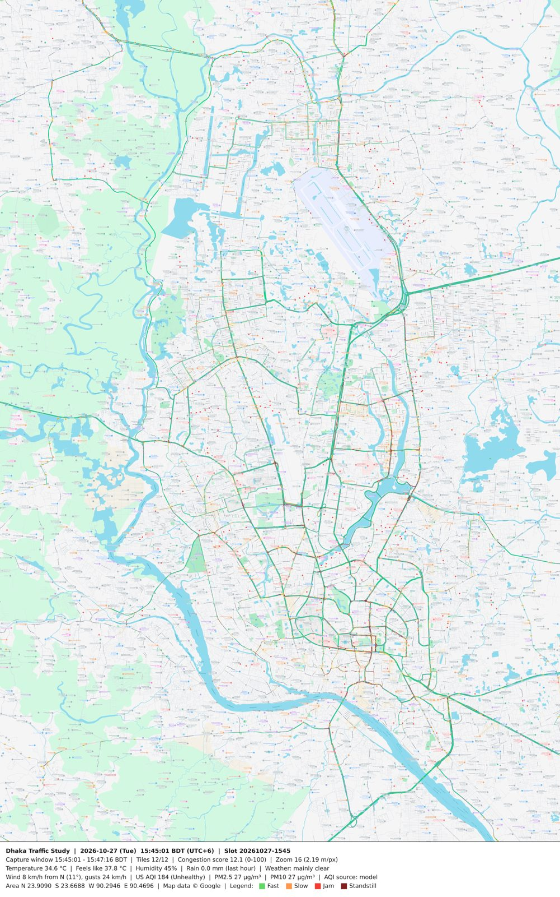
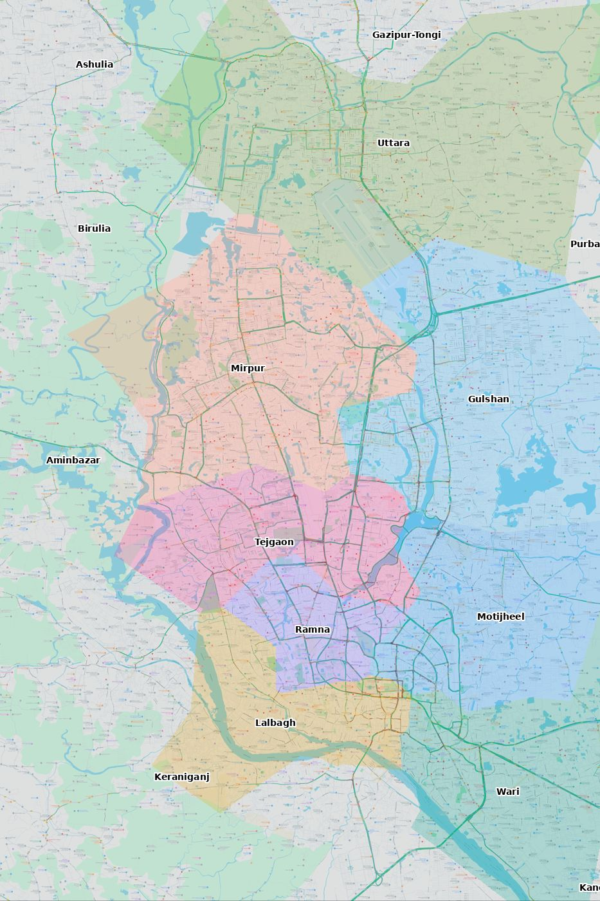

ঢাকা মেট্রোপলিটন এলাকার যানজট লগ
Google Maps ট্রাফিক রঙ থেকে জুম 17-এ (প্রতি পিক্সেল ≈ 1.1 মিটার, সংযোগ সড়কসহ) মাপা যানজট। দিনে প্রতি 15 মিনিটে, রাত 1টা–5টা প্রতি ঘণ্টায়। প্রতিটি ছবির নিচে সময়, তাপমাত্রা, বৃষ্টি, বাতাস ও AQI লেখা থাকে।
প্রতিদিন, প্রতি ঘণ্টা
প্রতিটি ঘর এক ঘণ্টার গড় যানজট (পুরো গবেষণা এলাকা)। সবুজ মানে রাস্তা ফাঁকা, গাঢ় লাল মানে প্রায় থেমে থাকা।
দৈনিক যানজট সূচক ও বৃষ্টি
রেখা: দিনের গড় যানজট স্কোর। কলাম: সেদিনের মোট বৃষ্টি (মিমি)।
বিভাগ ও এলাকা অনুযায়ী গড় যানজট
পুরো সময়ের গড় স্কোর, বেশি থেকে কম। ধূসর লেখা মানে DMP-এর বাইরের এলাকা।
সবচেয়ে খারাপ ১০টি মোড়
৭০টি মোড়ের দৈনিক র্যাংকিং: তীব্র জ্যামের ঘণ্টা (সকাল ৬টা–রাত ১২টা) ও গড় স্কোর অনুযায়ী। পূর্ণ তালিকা Drive-এর CSV/ranking ফোল্ডারে।
দিনভিত্তিক সম্ভাব্য কারণ
আবহাওয়া, ছুটির তালিকা ও সংবাদ শিরোনাম মিলিয়ে স্বয়ংক্রিয়ভাবে লেখা। এগুলো সম্ভাব্য কারণ, নিশ্চিত প্রমাণ নয়।
সর্বশেষ স্ন্যাপশট
দ্বিতীয় ছবির রঙিন অংশগুলো DMP ট্রাফিক বিভাগ, হালকা ধূসর অংশগুলো DMP-এর বাইরের এলাকা। ভুল জায়গায় থাকলে config.py-তে থানার অবস্থান ঠিক করুন।

